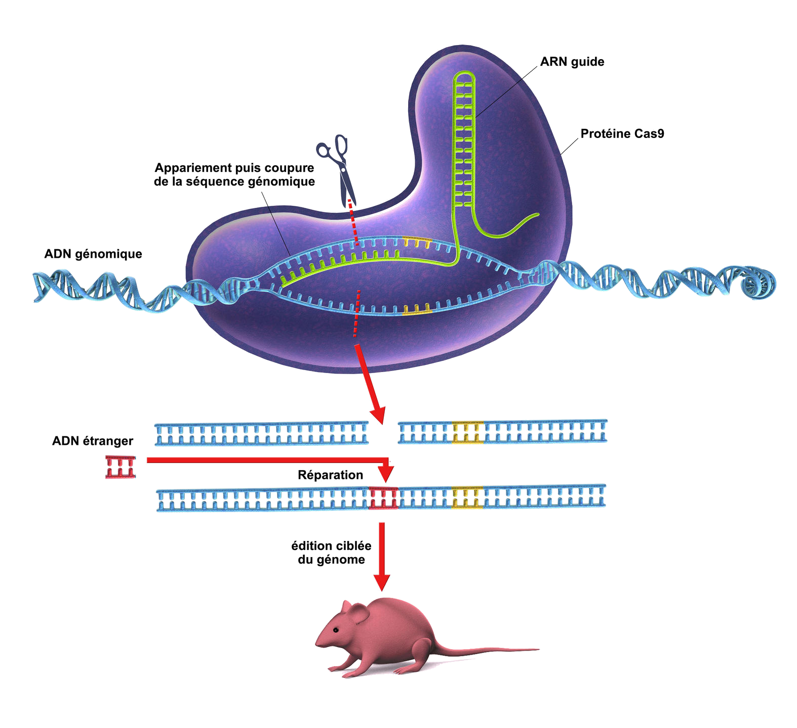

Description de la technologie
Crispr-Cas9 est une enzyme découverte en 2012 par la chercheuse française Emmanuelle Charpentier. Cette enzyme permet de couper un morceau d’ADN et de le remplacer par un autre, et ce de manière complètement déterministe.

Ainsi, il est possible de sélectionner précisément un gène, et de le modifier comme bon nous semble, et ce même directement chez un embryon.
Une révolution dans le domaine
Globalement, on peut affirmer qu’il était déjà possible de réaliser de telles modifications avec d’autres technologies, comme par exemple avec la technologie TALEN. Cependant, Crispr-Cas9 assure un coût, une difficulté et un temps de réalisation extrêmement réduits.
Problèmes majeurs
Bien évidemment, une telle découverte, créant un tel écart avec les autres technologies du domaine, ne peut que susciter des questions autour des enjeux éthiques de ses performances, ce que nous allons mettre en lumière.